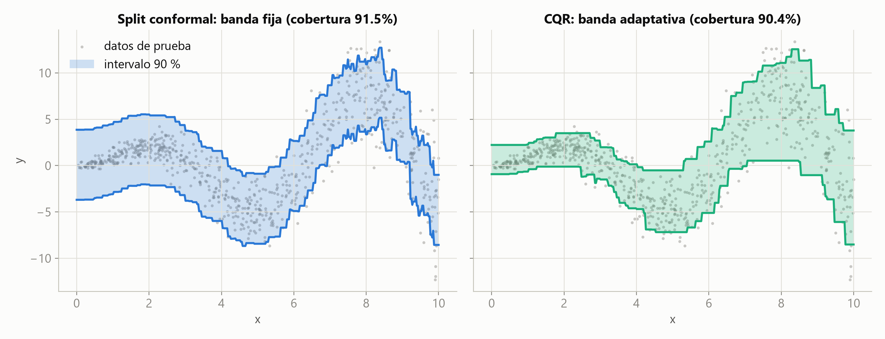
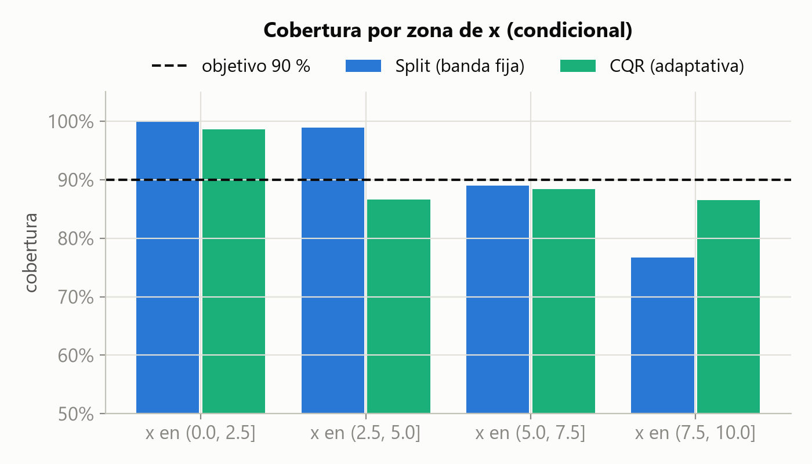
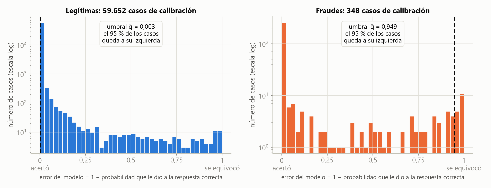
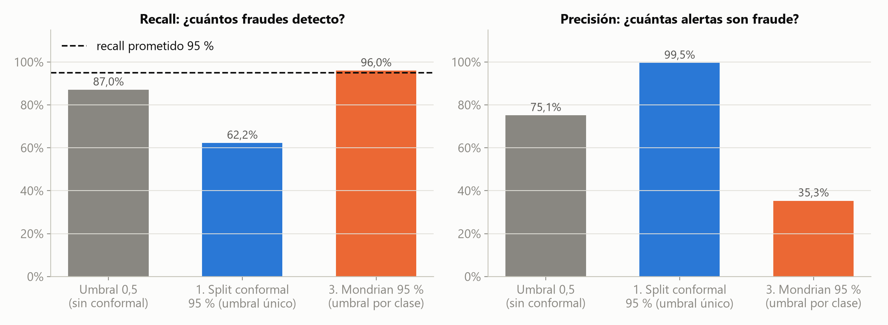
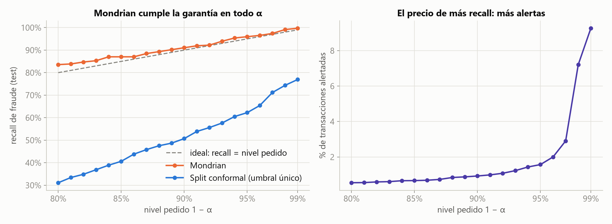
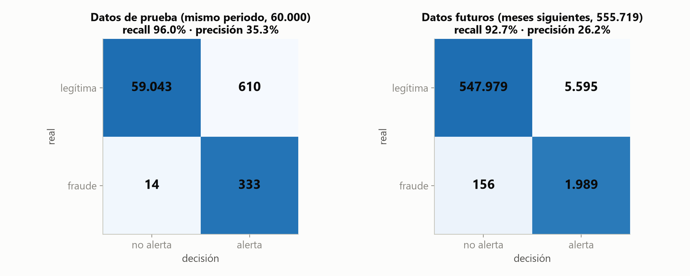
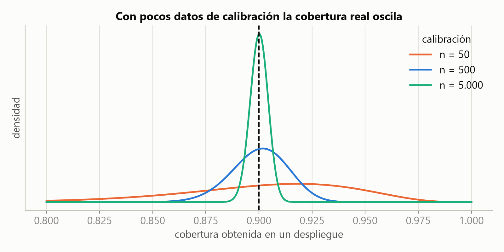

“El gasto de marzo será $1.200 M”
“Esta transacción es fraude con p = 0,83”
“El gasto estará entre $1.050 M y $1.380 M, y acierto 9 de cada 10 veces”
“Con esta regla detecto al menos el 95 % de los fraudes”
Le muestro 100 facturas cuyo valor real ya conozco y que él nunca ha visto.
Anoto cuánto se equivocó en cada una.
Ordeno los errores de menor a mayor y miro el error número 90: digamos, $80 mil.
Desde hoy, si dice “vale $1 millón”, yo digo: “entre $920 mil y $1.080.000”, y acierto el 90 % de las veces.
| En la analogía | Nombre técnico |
|---|---|
| El empleado | El modelo (XGBoost) |
| Las 100 facturas | Set de calibración |
| Cuánto se equivocó | El score (error) |
| El error número 90 | q̂, el umbral |
| El 90 % | 1 − α (α = error que acepto) |
No importa si los datos son normales, sesgados o con valores extremos.
Regresión logística, XGBoost o una red neuronal: se usa como caja negra.
La garantía vale con los datos que tengo, no solo “con infinitos datos”.
Separar los datos en entrenamiento, calibración y prueba.
Entrenar el modelo solo con los datos de entrenamiento.
Medir los errores (scores) del modelo en calibración.
Tomar el umbral q̂ y usarlo para armar el rango de cada caso nuevo.
¿Por qué n+1? Porque el caso nuevo también entra en la fila: con 9 errores de calibración hay 10 posiciones posibles.
Resultado garantizado: la cobertura queda entre 1 − α y 1 − α + 1/(n+1).
import numpy as np def conformal_quantile(scores, alpha): n = len(scores) # cuántos errores tengo k = int(np.ceil((n + 1) * (1 - alpha))) # qué posición del ranking tomo if k > n: # muy pocos datos: return np.inf # no puedo prometer nada return np.sort(scores)[k - 1] # ordeno y devuelvo el k-ésimo
errores = np.array([0.3, 1.2, 0.7, 2.5, 0.1, 0.9, 1.8, 0.4, 3.1]) conformal_quantile(errores, alpha=0.2) # 9 errores, quiero 80 % # k = (9 + 1) x 0.8 = 8 -> el 8.º más pequeño -> 2.5
| Método | ¿Qué es el “error”? | ¿Qué entrega? |
|---|---|---|
| 1. Split conformal banda fija | La distancia entre el valor real y la predicción | Predicción ± q̂: el mismo margen para todos |
| 2. CQR banda adaptativa | Cuánto se sale el valor real de una banda “piso–techo” | Un margen ancho donde hay duda y angosto donde no |
| 3. Mondrian umbral por clase | 1 − la probabilidad que el modelo le dio a la respuesta correcta, medido por separado en cada clase | La garantía se cumple dentro de cada clase (por ejemplo, en los fraudes) |
from xgboost import XGBRegressor # Paso 1. Entreno el modelo (solo con train) model = XGBRegressor(max_depth=3).fit(X_train, y_train) # Paso 2. Mido sus errores en calibración errores = np.abs(y_cal - model.predict(X_cal)) # Paso 3. Saco el umbral q_hat q_hat = conformal_quantile(errores, alpha=0.10) # Paso 4. Predicción ± q_hat pred = model.predict(X_new) lower, upper = pred - q_hat, pred + q_hat
# Paso 1. Dos XGBoost: uno para el "piso" y otro para el "techo" q = dict(objective="reg:quantileerror", max_depth=3) piso = XGBRegressor(quantile_alpha=0.05, **q).fit(X_train, y_train) techo = XGBRegressor(quantile_alpha=0.95, **q).fit(X_train, y_train) # Paso 2. Error = cuánto se sale el dato real de la banda errores = np.maximum(piso.predict(X_cal) - y_cal, y_cal - techo.predict(X_cal)) # Paso 3. Saco el umbral q_hat q_hat = conformal_quantile(errores, alpha=0.10) # Paso 4. Corrijo la banda con q_hat lower = piso.predict(X_new) - q_hat upper = techo.predict(X_new) + q_hat

| Método | ¿Cumple el 90 %? | Ancho promedio del intervalo | Lectura |
|---|---|---|---|
| 1. Split conformal (banda fija) | Sí: 91,5 % | 7,56 | Mismo ancho en todas partes |
| 2. CQR (banda adaptativa) | Sí: 90,4 % | 6,61 | 12 % más angosto: se abre solo donde hace falta |

{legítima}
Seguro de que es legítima.
No alerto.
{fraude} o {legítima, fraude}
No puedo descartar fraude.
Alerto para revisión.
{ } vacío
Caso muy raro: ninguna respuesta convence.
Aquí no alerto.
Regla de decisión: alerto si “fraude” está en el conjunto. Así puedo medir con las métricas del curso: recall, precisión y matriz de confusión.
# Paso 1. Entreno el XGBoost del notebook 02 (solo con train) clf = XGBClassifier(n_estimators=300, max_depth=6, scale_pos_weight=spw, enable_categorical=True).fit(X_train, y_train) # Paso 2. Mido el error en cada transacción de calibración P_cal = clf.predict_proba(X_cal) # 2 columnas: [p(legítima), p(fraude)] # de cada fila tomo la probabilidad de su clase REAL... p_real = P_cal[np.arange(len(y_cal)), y_cal] # ...y el error es lo que le faltó para llegar a 1 s_cal = 1 - p_real
El error es lo que le faltó al modelo para darle 100 % a la respuesta correcta. Tres casos de ejemplo:
| Era… | El modelo dijo p(fraude) = | Error |
|---|---|---|
| Legítima | 0,001 | 0,001: acertó |
| Fraude | 0,98 | 0,02: acertó |
| Fraude | 0,10 | 0,90: se equivocó |
# Paso 3. Saco el umbral q_hat q_unico = conformal_quantile(s_cal, 0.05) # MÉTODO 1: con todos q_legit = conformal_quantile(s_cal[y_cal == 0], 0.05) # MÉTODO 3: solo legítimas q_fraude = conformal_quantile(s_cal[y_cal == 1], 0.05) # MÉTODO 3: solo fraudes # Paso 4. Una etiqueta entra al conjunto si su error (1 - p) es <= su umbral P = clf.predict_proba(X_test) conjunto_m1 = (1 - P) <= q_unico # mismo umbral para las 2 etiquetas conjunto_m3 = (1 - P) <= [q_legit, q_fraude] # un umbral para cada etiqueta # Decisión: alerto si "fraude" (columna 1) quedó dentro del conjunto alerta = conjunto_m3[:, 1] recall_score(y_test, alerta), precision_score(y_test, alerta)
q̂ = 0,003, calculado con las 60.000. Solo alerta si p(fraude) ≥ 0,997: casi nunca.
Legítimas: q̂ = 0,003 (59.652 casos).
Fraudes: q̂ = 0,949 (348 casos).
Alerta si p(fraude) ≥ 0,051.
Datos: 300.000 transacciones, solo 0,58 % son fraude.
Reparto: 180 mil para entrenar, 60 mil para calibrar y 60 mil para probar.
Modelo: el XGBoost del notebook 02 (PR-AUC 0,912).
Promesa pedida: 95 %.


| Regla de decisión | Recall | Precisión | Alertas | ¿Qué promete? |
|---|---|---|---|---|
| Umbral 0,5 (sin conformal) | 87,0 % | 75,1 % | 402 | Nada |
| 1. Split conformal 95 % | 62,2 % | 99,5 % | 217 | 95 % en el total (95,3 %), no en los fraudes |
| 3. Mondrian 95 % | 96,0 % | 35,3 % | 943 | Detectar ≥ 95 % de los fraudes |
Mezcla todos los errores. Como casi todo es legítimo, el umbral lo deciden las legítimas.
La promesa del 95 % se cumple en el total, pero solo se detecta el 62 % de los fraudes.
Calcula un umbral solo con los fraudes y otro solo con las legítimas.
La promesa se cumple en cada clase: detecta el 96 % de los fraudes. Eso es una garantía de recall.


fraudTest.csv). Recall 92,7 %: menos del 95 % prometido.| Riesgo | Qué pasa | Qué hacer |
|---|---|---|
| Los datos cambian con el tiempo | La promesa se debilita (lo vimos: 92,7 % en vez de 95 %). | Vigilar y recalibrar con datos recientes |
| La promesa es un promedio | Se cumple en total, pero puede fallar en un grupo. | CQR si la duda cambia; Mondrian si importa una clase |
| Pocos datos de calibración | El resultado real oscila alrededor de lo prometido. | Idealmente 1.000 o más (por clase, en Mondrian) |
| Usar calibración para entrenar | El modelo “ya vio” esos datos y la promesa se rompe. | Separar tres partes y usar la calibración una sola vez |
| Explicarlo mal | “Este intervalo tiene 90 % de probabilidad” es incorrecto. | Decir: “este método acierta el 90 % de las veces” |

Si prometo 90 %, ¿qué obtengo en realidad? Depende de cuántos datos usé para calibrar:
| Datos de calibración | Lo que realmente obtengo |
|---|---|
| 50 | entre 83 % y 96 % |
| 500 | entre 88 % y 92 % |
| 5.000 | entre 89 % y 91 % |
En el ejemplo, Mondrian calibró los fraudes con solo 348 casos: por eso este número importa.
# pip install mapie xgboost from mapie.regression import SplitConformalRegressor, ConformalizedQuantileRegressor from mapie.classification import SplitConformalClassifier # MÉTODO 1 en regresión: banda fija reg = SplitConformalRegressor(model, confidence_level=0.90, prefit=True) reg.conformalize(X_cal, y_cal) # calibrar y_pred, intervalos = reg.predict_interval(X_test) # predecir con intervalo # MÉTODO 2: CQR, con los XGBoost [piso, techo, mediana] cqr = ConformalizedQuantileRegressor([piso, techo, mediana], confidence_level=0.90, prefit=True) cqr.conformalize(X_cal, y_cal) y_pred, intervalos = cqr.predict_interval(X_test) # MÉTODO 1 en clasificación: conjuntos con un umbral único cls = SplitConformalClassifier(clf, confidence_level=0.95, prefit=True) cls.conformalize(X_cal, y_cal) y_pred, conjuntos = cls.predict_set(X_test)
conformalize para calibrar y predict_interval o predict_set para predecir.
Con los XGBoost del ejemplo da los mismos resultados que el código hecho a mano.
No viene incluido: se hace a mano como en la diapositiva 16.
AstraZeneca lo usa para saber en cuáles predicciones sobre moléculas puede confiar (Norinder et al., 2014).
Las empresas pronostican la demanda como un rango y no como un solo número. Librerías como MAPIE ya lo incluyen.
El modelo entrega una lista corta de diagnósticos posibles, con garantía, y el especialista toma la decisión final.
Los bancos priorizan qué casos revisar y garantizan que detectan la mayoría de los fraudes, como en nuestro ejemplo.
Un chatbot entrega varias respuestas y se garantiza que al menos una es correcta (Quach et al., 2024).
El vehículo calcula la zona donde puede estar un peatón, con garantía, y así planea una ruta segura.
Bajo NIIF 17, cada combinación centro de costos–cuenta se clasifica como atribuible o no atribuible a los contratos de seguro, según la política corporativa.
Un XGBoost aprende la clasificación vigente y Mondrian decide qué combinaciones nuevas se asignan solas, con garantía en cada categoría.
{Atribuible} o {No atribuible}
Asignación automática y consistente con la política.
{Atribuible, No atribuible}
Caso fronterizo: pasa a revisión del experto, con la sugerencia del modelo.
1. Conformal le pone una garantía a cualquier modelo: solo mide sus errores en datos que no vio.
2. Banda fija para empezar, CQR cuando la duda cambia y Mondrian cuando una clase importa más.
3. La garantía vale mientras los datos no cambien: en producción, vigilar y recalibrar.